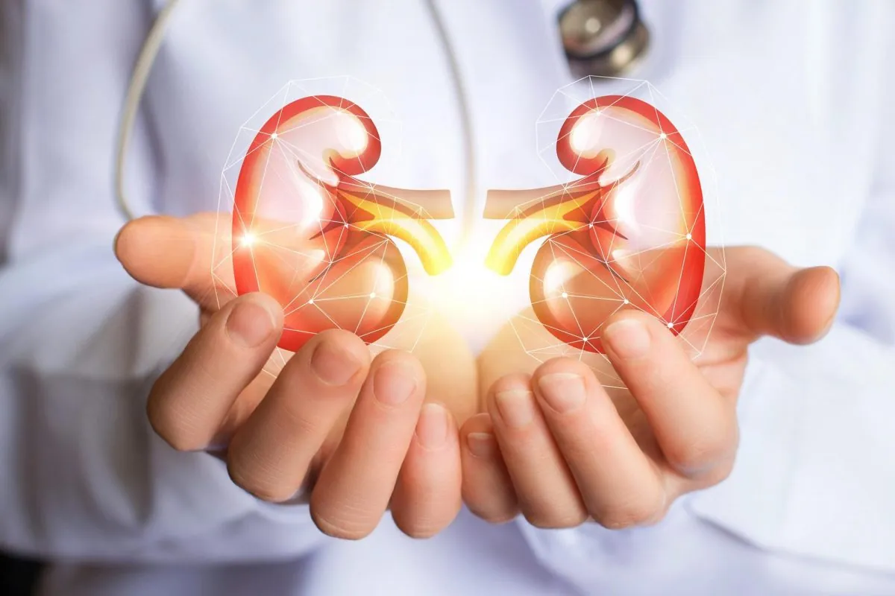

Kidney Care
Protecting kidneys by identifying early kidney diseases and retarding CKD progression by good control of hypertension, diabetes, and glomerular diseases, to providing quality hemodialysis, peritoneal dialysis and kidney transplantation.
Explore nephrology services